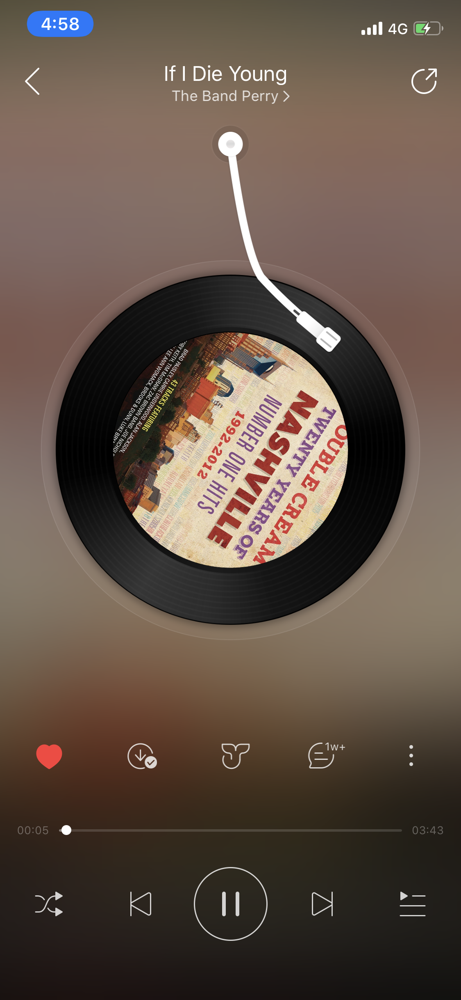

这里记录一些学生产品经理的观察和思考。一家之言，定有谬误之处，请诸君不吝指教。
网易云音乐是一款很流行的音乐软件。最近在看网易产品研究院录制的《产品经理》教学视频，其中“需求挖掘”这一章节，主讲人拿《网易云音乐》来做为案例， 说明团队内部也对这款产品相当满意，当然市场上的成功也反映了这一点——即使在与QQ音乐的版权战争中节节败退，用户的流失也是可控的——说明一个软件的UI、交互、调性甚至能弥补核心内容上的缺失。 不要觉得产品和设计不重要了啊喂！
我们在使用过程中，可能会发现，播放“歌单”和“本地歌曲”时，会自动生成播放播放列表，播放界面中，是可以操作“上一首”的。 而在“私人FM”中，“上一首”的按键消失了。今天我想尝试对这一设计的原因进行分析，并说明我对此的评价。
免责条款：以下观点是基于我的推测，论据不一定得到验证和支持。写作本文的目的是学习尝试从产品经理的角度进行思考。
现在，播放“歌单”和“本地歌曲”的时候，播放界面是这样的。

图中主要有12个按钮，从上到下从左到右分别是
a. 分享
b. 喜欢
c. 下载到本地
d. 鲸云音效
e. 评论
f. （下一级操作菜单入口）
g. 进度条
h. 循环模式
i. 上一首
j. 播放/暂停
k. 下一首
l. 生成的播放列表
图中下方的按钮被削减为7个，分别是
a. （下一级操作菜单入口）
b. 进度条
c. 垃圾桶（垃圾桶里的歌曲不在“私人FM”和“个性化推荐”中出现）
d. 喜欢
e. 播放
f. 下一首
g. 评论
通过对这两个界面的观察，可以得出，两播放界面的相同点和不同点：
播放/暂停键和进度条是音乐播放软件的基础配置。
听到自己喜欢的歌，点击红心，收藏入“我喜欢的音乐”歌单。
我对这个功能的巧妙性佩服到五体投地：它是用户主动发起的，简单的，采集信息的一个功能。
主动发起：用户有收藏喜欢的音乐的需求，无须引导，用户会主动使用。
简单：点击一下“喜欢”，再点击一下取消“喜欢”，非常简单。
采集信息：可以采集到用户的喜好，进而向其推荐类似的音乐，甚至听歌风格类似的用户。
查看用户发布的评论，对其点赞、回复，或自己撰写评论。这个是网易云音乐的护城河，吸引用户发布自己的想法、回忆、感受，吸引其他用户来阅读他的故事。
下一首即“跳过”，跳过蕴含着多个含义：
可能是不喜欢这个歌曲，
可能是对这类歌曲无感，
可能是当前场景、心情不适合，例如在骑车不能听交响乐，
可能是最近听得比较多听腻了……
所以虽然“跳过”类似于“喜欢”也能反映出一些信息，但是由于多重含义混杂在一起，它反映出信息的准确度是比较低的，不建议通过“跳过”来做算法的输入。
点击较少的功能。
分享给其他人或发布到动态。（在私人FM中被放在下级菜单的入口中，可能是点击较少的功能。）
（私人FM连播放列表都不提供，循环模式无意义）
上一首有两个含义：这首歌我要再听一遍，手滑了我要回到上一个。
我个人觉得用户操作“上一首”是能反映出一些珍贵信息的——
If 这首歌没被跳过，没被切歌，播放结束后被“上一首”：很喜欢
If 被切歌，被“上一首”：误触
问题来了，为什么要强行在前面插入一个产品的全屏载入界面呢？白白浪费了用户的2秒钟时间。我这面目前只想到一个原因：想显得高大上，和其他大厂产品保持一致。 其实开屏广告问题不大，微博CEO来去之间曾爆料一个开屏三秒100万，不丢人，不用藏着掖着。
请注意，在关闭App 后台后，再次打开App ，知乎还会给你呈现这4-5秒的视觉盛宴。
从用户体验的角度出发，应该加一个判断，如果在某一时间段已经展示了多少次，则下次进入App时不显示广告。 在搜索“开屏广告”时，发现了桃花仙坞的博文，《APP开屏广告设计之路》https://blog.csdn.net/weixin_43047491/article/details/81983889。学习到其工作流程。
再说说这个文案。我对这个Slogan 有一定的看法。在载入界面展示“我们都是有问题的人”，现在“有问题”的语义已经“没有问题”了吗？
我作为用户，对这个表达有点“膈应”。之前的口号是“有问题，上知乎”。这里的“有问题”，给我的感受是是人有疑问，上“知乎”这个网站和网友进行交流，寻求解答。
另外一个比较玄学的角度，（以下纯是个人解读，未参考任何观点，本人没学过语言学，仅供参考）
默读“有问题，上知乎”时，由于是两个三字短语，你的重音是放在“题”和“乎”上的。而“问题”这个词语暧昧就暧昧在，如果强调“题”，就是代表疑问。 “老师，他有问题！”这个题听起来比较“正式”，不太轻佻，应该是代表有不懂的地方，需要老师解答。 而“老师，他有问题！”，这个题如果轻读了，或者重心在问上，就会给人一种“评价人品、行为”等的感觉。而我们都是“有问题的人”，是不是给用户一种“这人有问题”的感觉？我个人看了觉得比较别扭吧。
从“发现更大的世界”到“有问题”，我感受到知乎的发展方向，已经稍有所改变。可能想要从KOL 高质量社区向平民化社区发展吧。之前看过一篇文章， 说知乎现在面临的问题之一是没法为大V们提供足够的正向反馈：没有合适的变现方法，没有一呼百应的超然地位，从而使大V们没有动力继续在社区内持续输出高质量内容。 大V的出走可能导致整体文字质量的下降，但是我认为，吸引沉默的大多数用户发言，也不失为一种好的办法。只要有人在创作，只要有观点的碰撞，就能够产生有质量的内容，能够让读者从中受益。 相反，靠那种“人在法国，刚下飞船”的大V，人们一开始会“哇好厉害”，但是更多的是猎奇的心理。总让你看魔术，失去兴趣的那一天你会直接走掉，况且有些魔术师实在是滥竽充数； 而人们熙熙攘攘以亲身体验讨论着“5000块电视买索尼还是三星”的时候，我反而觉得更接地气。内容为王，做好搜索和索引，内容对于社区来说真的不嫌多。 知乎新对所有用户开放的“创作者中心”功能，就是对大众用户的一种激励手段。
有人可能会举“百度知道”为反例。在“百度知道”里，激励答主回答的是什么？是悬赏分。一个题目发出来，悬赏分是要给到“最佳答案”的。所以很多人“有枣没枣打一竿子再说”，先复制黏贴个内容； 知乎社区的激励是什么？是“赞”，是“关注”，是个人形象的建立。建立个人形象怎么可能会瞎乱搞些驴唇不对马嘴的东西上来？从机制上已经确定了低质量答案是无法生存的。